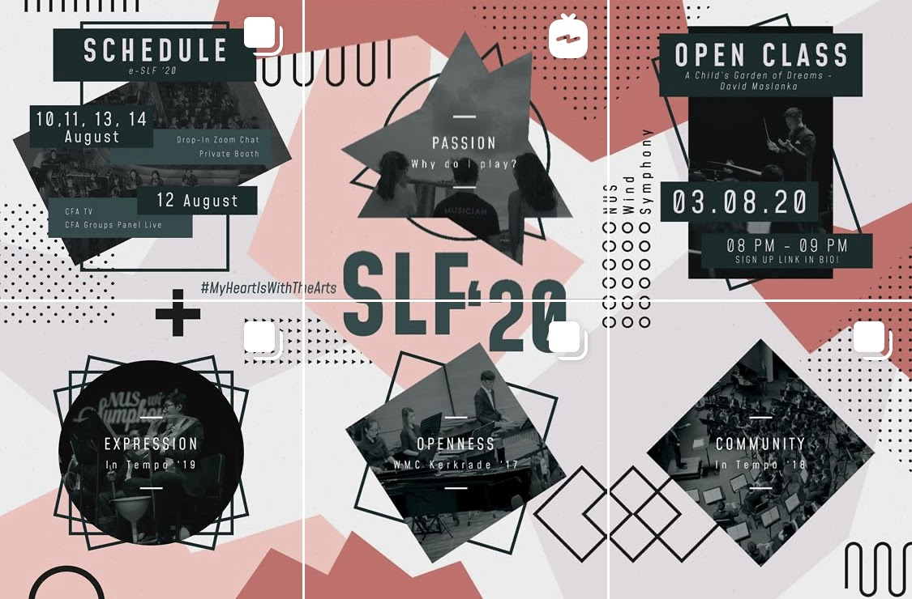

NUSWS: Publicity and Marketing Officer
As part of NUS Wind Symphony, I was the Publicity and Marketing Officer from 2020 to 2021, handling publicity campaigns for events such as recruitment, concerts, and social media campaigns. Despite the Covid-19 Pandemic abruptly halting many of our yearly plans, we managed to consistently adapt to changes in not only how we engaged with our artform, but how we engage and interact with our audiences. As such, we shifted a majority of our focus to online engagement where we could still reach people all over Singapore and the world.
From online audience engagement campaigns, to receruitment, and to concerts, we adapted by pushing for a greater online presence. This involed greater use of our current social media platforms, as well as expanding to other platforms such as Spotify. As restrictions slowly lifted, our yearly concerts shifted to online livestreams with mini-ensembles. Check out the NUSWS Instagram Page!